Informacje ogólne
Ban dostaje każdy, kto bierze udział w nielegalnym trapie. Dotyczy to osoby trapującej (np. wystawiającej hitbox) i osób zrzucających dripy.
Poniżej są najczęstsze nielegalne trapy. To nie jest zamknięta lista. Administrator może uznać za nielegalny także inny trap, jeśli uwięziony gracz nie ma żadnej możliwości ucieczki.
Wystawanie hitboxem (nielegalne)
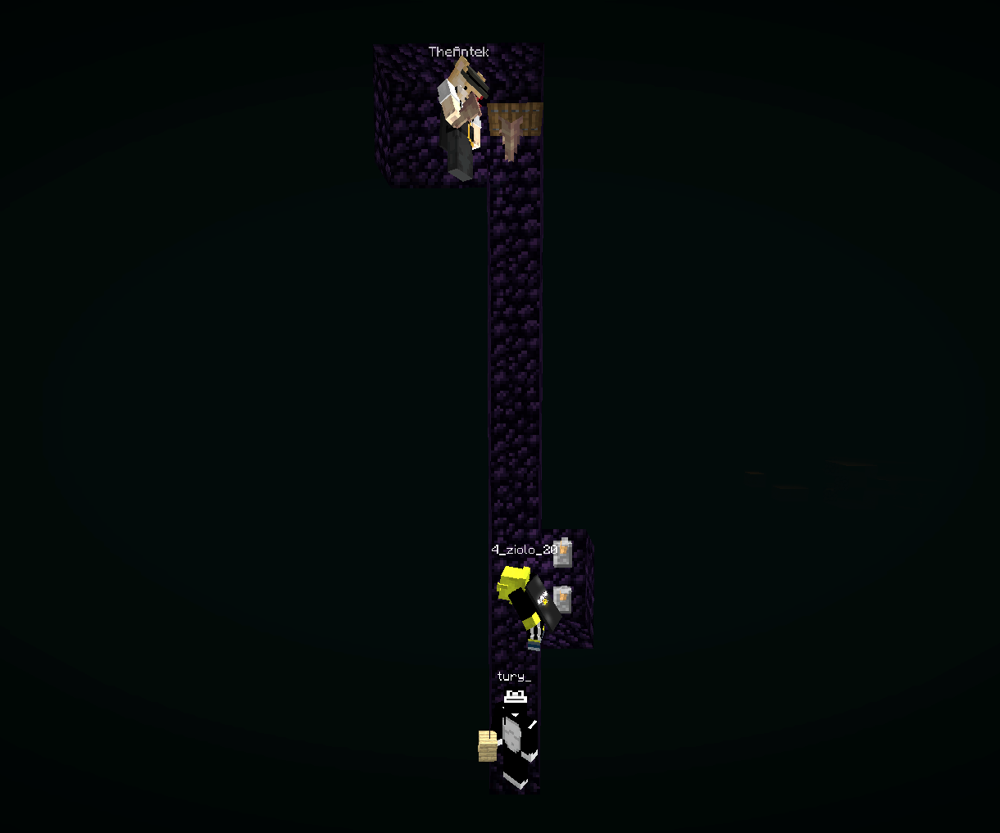
Wariant „Leżenie”
Gracz w środku trapu zasłania swoim hitboxem gracza pod sobą. Uwięziony nie może przez to stawiać bloków ani rzucać ender pereł, a trapujący spokojnie zrzuca na niego dripy.
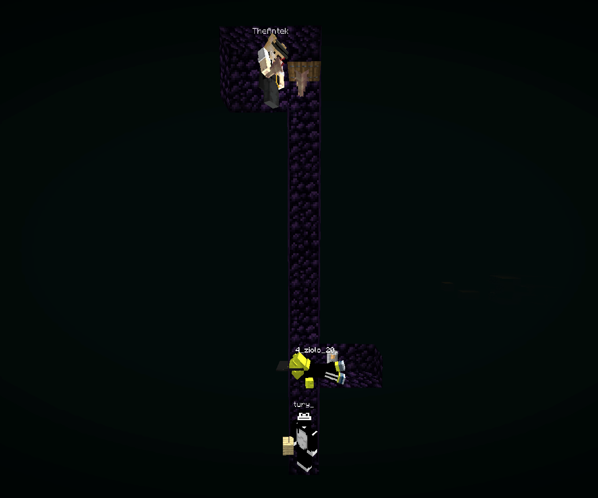
Wariant „Stanie”
Działa tak samo, tylko gracz zasłaniający stoi. Spotyka się go częściej niż leżenie.
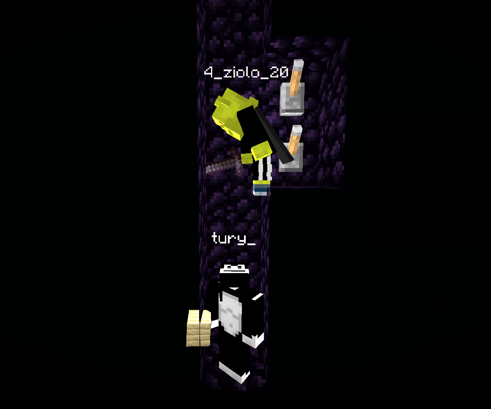
Wyjątek: gracz, który jest w głębszej części trapu, bo np. poprawia bannery, nie łamie zasad, jeśli nie blokuje drogi ucieczki. Może to wyglądać podobnie do wystawania hitboxem, ale nie służy celowemu zasłanianiu.
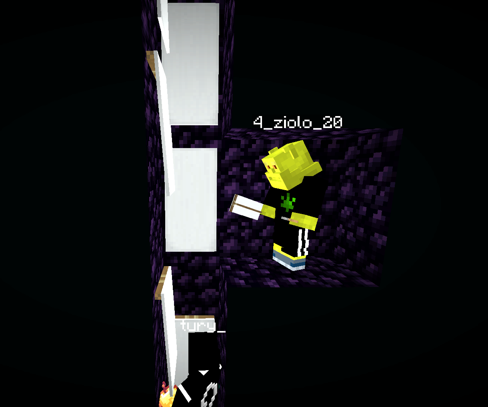
Kratka 1x1b (trap 1x1 z bedrocka) (nielegalne)
Trap jest nielegalny, gdy uwięziony gracz stoi w przestrzeni 1x1 otoczonej bedrockiem z każdej strony. Gracze, którzy używają tego trapa, zwykle korzystają z niedozwolonych modyfikacji.
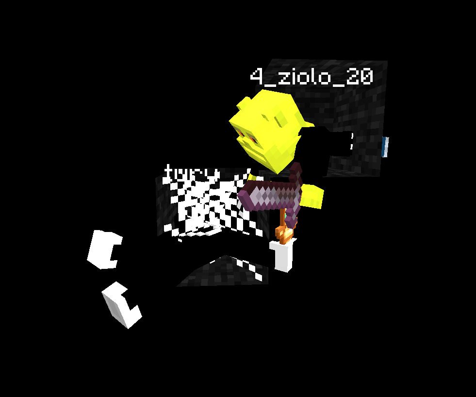
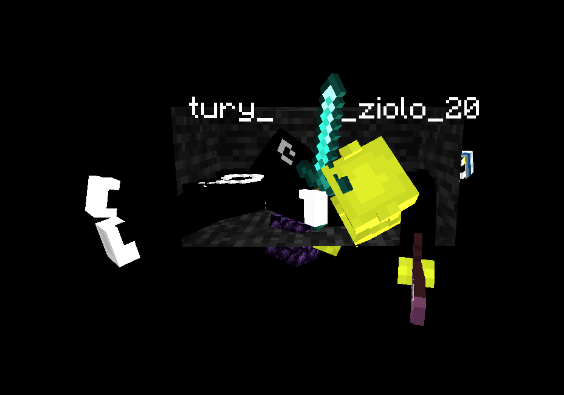
Legalny odpowiednik: „Kratka 2x1”. Uwaga, bywa mylona z nielegalnym leżeniem albo z kratką 1x1b.
Trapy przy spawnie i sektorze ochronnym (nielegalne)
Działają podobnie jak kratka 1x1b. Często używa się przy nich niedozwolonych modyfikacji, a uwięziony gracz nie ma żadnych szans. Ban jest wtedy, gdy jakakolwiek część trapu korzysta z sektora ochronnego (np. spawnu), gdzie nie da się niszczyć bloków.
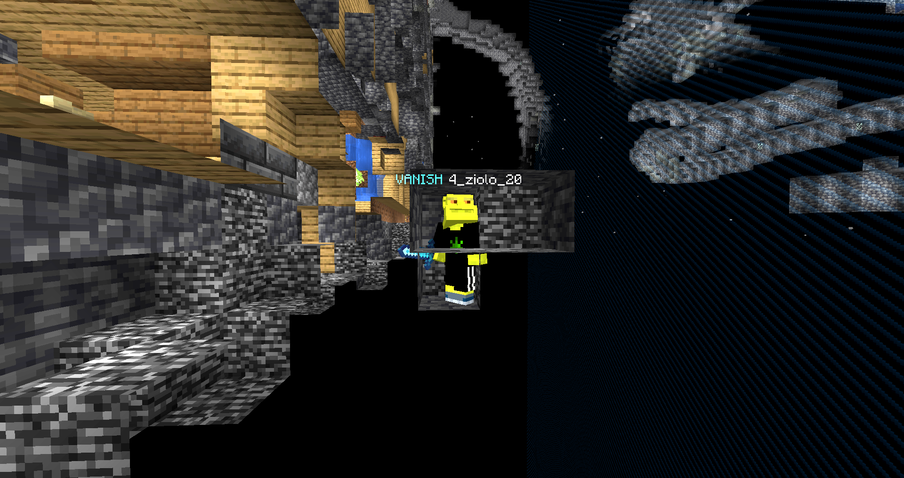
Przekroczenie limitu wagoników (nielegalne)
W trapie można użyć maksymalnie 4 wagoników (minecartów). Serwer ma limit 4 wagoników na chunk, więc więcej to wykorzystywanie błędów serwera.
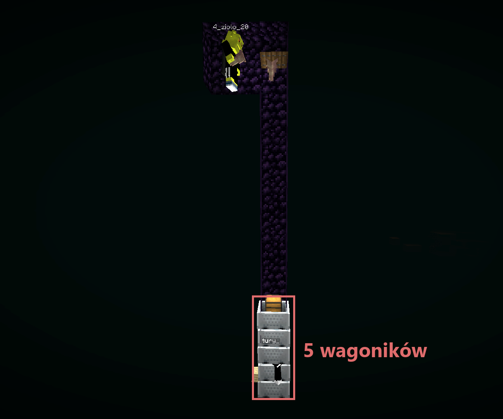
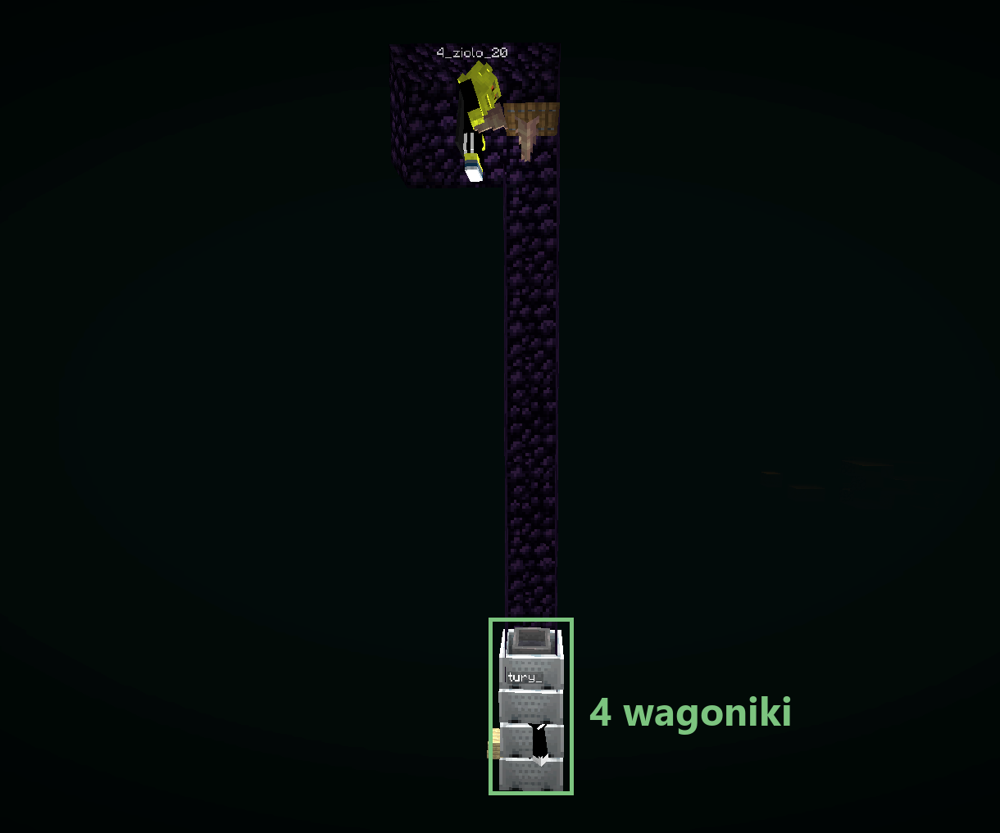
Altowanie (nielegalne)
Zdarza się rzadko, ale też jest zabronione. Altowanie to robienie czegoś, przez co gracz nie dostaje obrażeń.
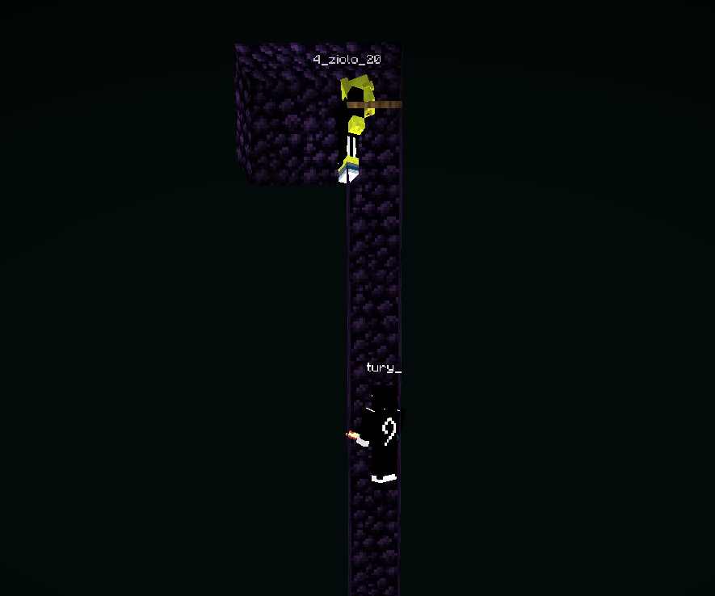
Pety w trapie (nielegalne)
Nie wolno używać w trapie petów, które gracz może aktywować, np. założyć i potem schować. Czasem uwięziony gracz nie może przez nie nic zrobić, więc nie da się wyjść z trapu.
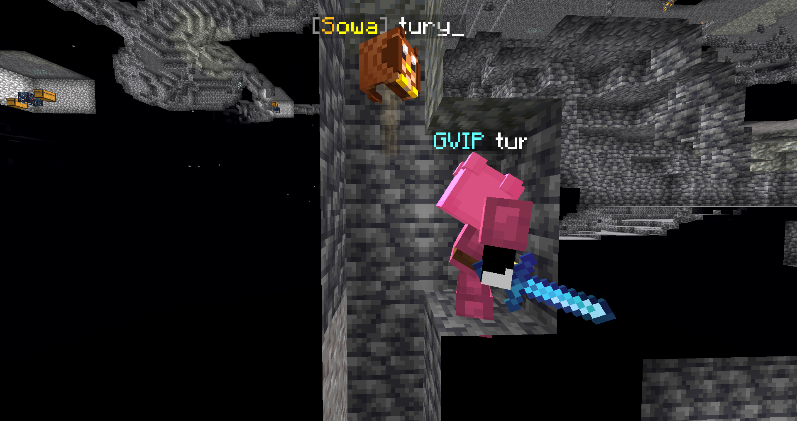
Mechanizmy (redstone) (częściowo nielegalne)
Mechanizmy (redstone, tłoki itp.) są zabronione w dwóch przypadkach.
1. Zrzucanie dripów
Mechanizm sam rzuca dripy na uwięzionego gracza.
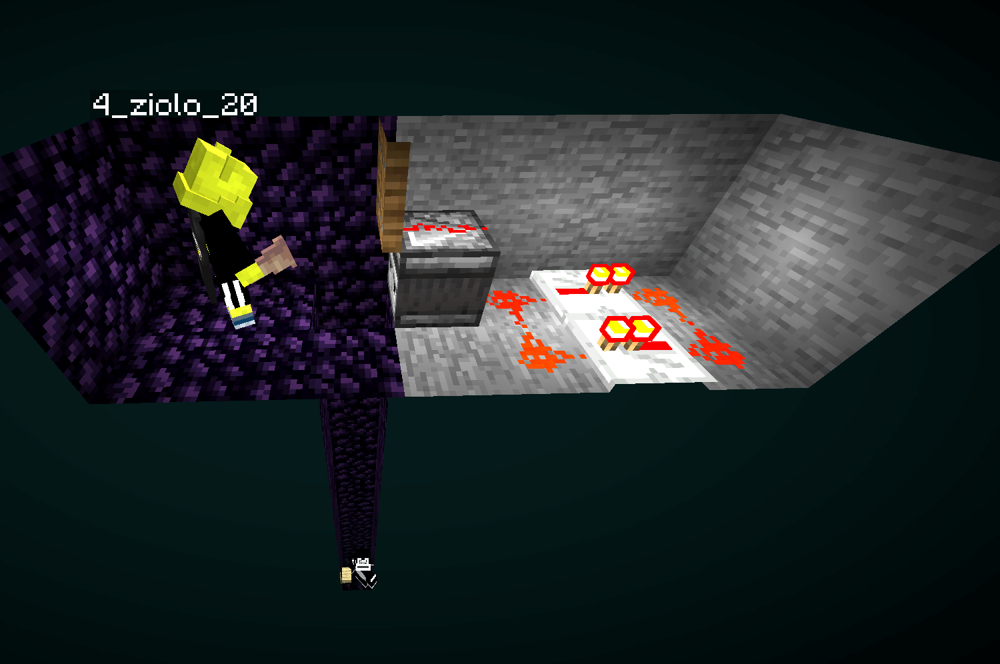
2. Mechanizmy w dolnej części trapa (na samym dole)
Mechanizm (np. tłoki) popycha uwięzionego gracza na dole trapu albo jest w jego najniższej części, z której nie da się uciec.
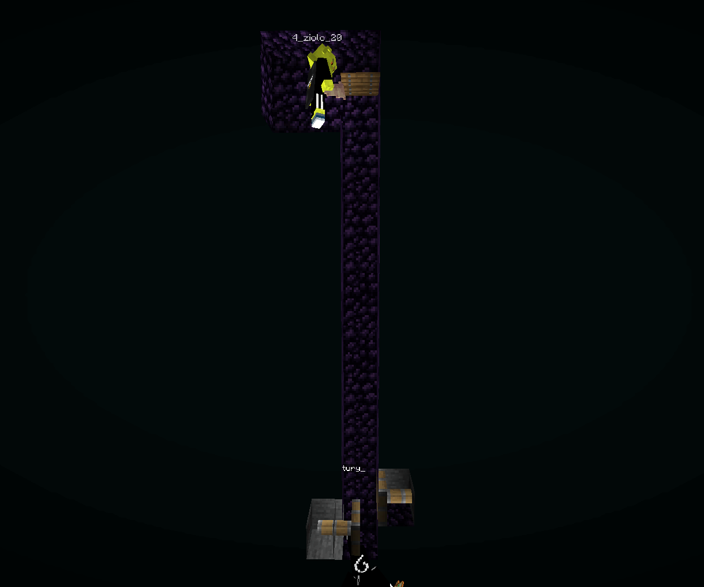
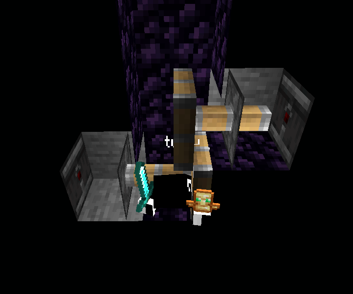
Dozwolone są mechanizmy, które tylko uruchamiają inne elementy trapu, np.:
- tłoki wpychające gracza głębiej do trapu,
- dźwignie, które tylko odsłaniają wejście do trapu lub jego element.